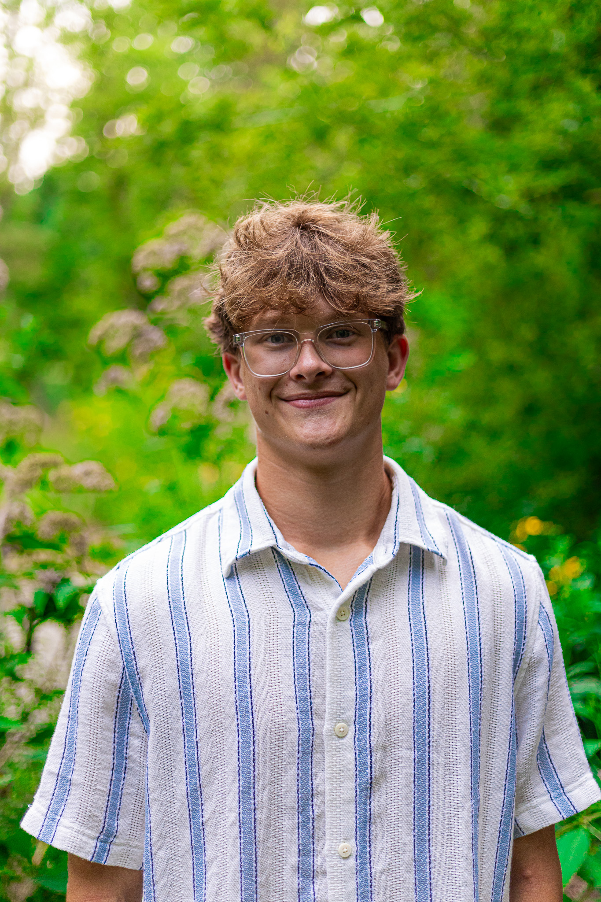
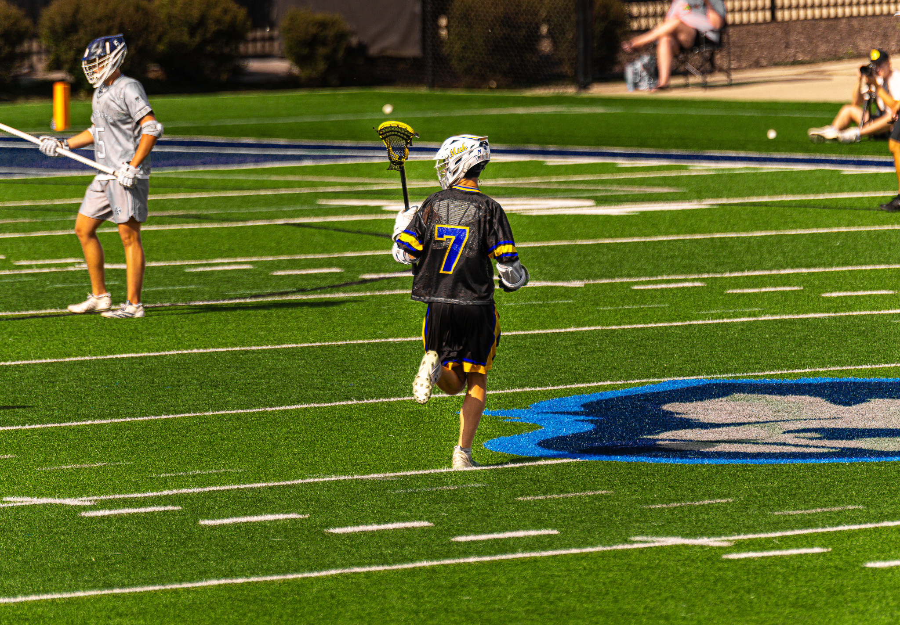

Photography
Portraits, sports, automotive, aviation, wildlife, and business-focused imagery.
About / Isaac Motl
I'm Isaac Motl, a photographer and web designer based in Wisconsin. IM Visuals brings together photography, design, and business-focused digital work under one creative direction.

My Story
Photography started as a way for me to meet new people, get outside, and push beyond what was comfortable.
Having a camera with me changed the way I looked at places I had already seen. Light, movement, landscapes, people, and small moments started to feel different when I was actively looking for something worth capturing.
Over time, that same attention to detail carried into web design. I liked the challenge of taking separate pieces — images, layout, writing, function, and strategy — and turning them into one experience that feels intentional.
The part I value most is still simple: making something another person is excited to see, use, or remember.
The goal isn't just to make something look good. It's to make it feel considered.
What I Bring
Photography and web design may look like separate services, but both depend on the same things: attention, hierarchy, clarity, and understanding what someone should feel or do next.
Portraits, sports, automotive, aviation, wildlife, and business-focused imagery.
Responsive websites built around strong presentation, clarity, and customer action.
Better structure, faster pages, and foundations that make sites easier to discover and use.
Contact flows, CRM organization, and simple systems that reduce repetitive business work.

Beyond Work
When I'm not building a website or taking photos, I'm usually exploring state parks, working out, playing lacrosse, fishing, or spending time with the people closest to me.
A lot of what I enjoy creatively comes from staying curious, trying new things, and paying attention to what is happening around me.
What Matters
Whether it's one photograph or an entire website, the small decisions are usually what separate something forgettable from something that feels finished.
Put care into the details even when most people won't consciously notice them.
Look for a better way to present an idea instead of automatically choosing the obvious one.
Keep learning, testing, and improving rather than treating the work as finished forever.
Understand the person or business behind the project before deciding what it needs.
Work Together
Photography, a new website, business content, or a combination of both — start with the idea and we can figure out what makes sense from there.
Start a Project View Photography